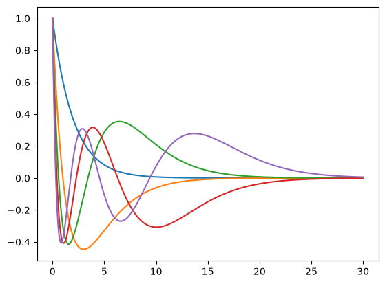
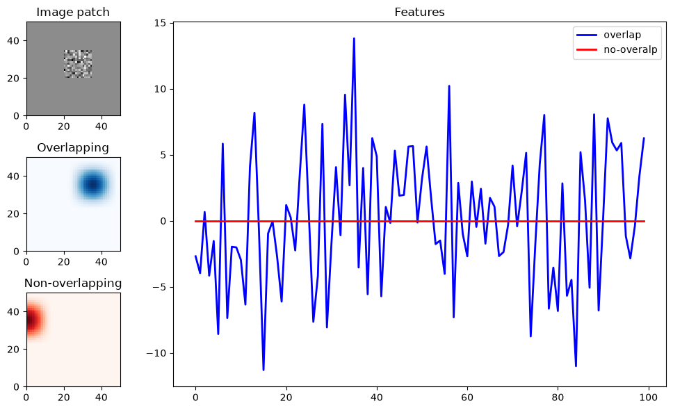

Download
Download this notebook: define_a_custom_basis.ipynb!
How to Define A Custom Basis Class#
If you want to design features that are not covered by our collection of basis functions, you can create a custom basis class using CustomBasis. To do so, simply provide a list of functions when initializing the CustomBasis object.
Below, we define a parametric family of functions—Laguerre polynomials—and fix their parameters using functools.partial. (See the admonition below for why we avoid using lambda functions in this context.)
As with any other basis, a CustomBasis can be composed with other basis objects in the usual way.
Example: Laguerre Polynomials#
import jax.numpy as jnp
import numpy as np
from scipy.special import laguerre
import matplotlib.pyplot as plt
import nemos as nmo
from functools import partial
x = jnp.linspace(0, 30, 1000)
c = 1.0
N = 5
P = np.zeros((N, N))
for n in range(N):
P[n, :(n+1)] = laguerre(n).coef[::-1]
P = jnp.array(P)
def laguerre_poly(poly_coef, decay_rate, x):
"""
Laguerre polynomial.
Evaluate a single basis function with polynomial coefficients `p` at
position `x` with decay time constant `c`.
"""
exp_decay = jnp.exp(-decay_rate * x/2)
return exp_decay * jnp.polyval(poly_coef[::-1], decay_rate * x)
funcs = [partial(laguerre_poly, p, c) for p in P]
bas = nmo.basis.CustomBasis(funcs=funcs, label="Laguerre")
features = bas.compute_features(x)
# Plot basis functions.
plt.plot(x, bas.compute_features(x))
plt.show()
# Add two Laguerre Poly
add = bas + nmo.basis.CustomBasis(funcs=funcs, label="Laguerre-2")
print(add.compute_features(x, x).shape)

(1000, 10)
Python Warning
Replacing functools.partial with a lambda function would not work.
funcs = [lambda x: laguerre_poly(p, c, x) for p in P]
This will create a list of identical Laguerre polynomial functions. Why? Because p is captured by reference, not by value. When each lambda is called, it uses the value of p at that moment — which will be the last value in P, for all functions.
In contrast, functools.partial evaluates its arguments immediately, so each function correctly captures its own p value, avoiding this issue.
Multi-dimensional Outputs#
Custom basis works with multi-dimensional outputs as well. Continuing on the Laguerre polynomial example, let’s assume that we want to take advantage of the JAX vmap capability for efficiency. We can create a single basis that maps a sample to a 5-dimensional output as follows.
import jax
# vmap_laguerre: R -> R^5
vmap_laguerre = jax.vmap(laguerre_poly, in_axes=(0, None, None), out_axes=1)
# a single function can be provided directly (i.e. not wrapped in a list)
bas_vmap = nmo.basis.CustomBasis(funcs=partial(vmap_laguerre, P, c), label="Laguerre-vmap")
# Plot basis functions.
plt.plot(x, bas_vmap.compute_features(x))
plt.show()
Python Warning #2
Using partial with keyword arguments in combination with a vmap-ed function will not work as expected. This is because jax.vmap applies in_axes only to positional arguments, and the number of positional arguments must match the length of in_axes.
In the example below, only x is passed positionally, so vmap sees just one argument—causing a mismatch with in_axes=(0, None, None).
import inspect
# partial() will bind 'poly_coef' and 'decay_rate'
# as keyword arguments, leaving 'x' as a keyword-only parameter.
vmap_laguerre = jax.vmap(laguerre_poly, in_axes=0, out_axes=1)
f = partial(vmap_laguerre, poly_coef=P, decay_rate=c)
print(inspect.signature(f))
# Calling f(x) positionally confuses vmap’s shape inference (it expects three positional args),
# so it fails with a shape/axis error before reaching laguerre_poly.
f(x)
Multi-dimensional Inputs#
A custom basis can also receive a multi-dimensional input. As an example, let’s write down a basis that acts on image inputs, and computes the dot product of an image with a bank of filter masks.
import matplotlib.gridspec as gridspec
# generate 100 random noise 50 x 50 images and crop a patch
imgs = np.random.randn(100, 50, 50)
crop = np.zeros((1, 50, 50))
crop[0, 20:35, 20:35] = 1
imgs *= crop
def image_dot_product(img, mask):
return jnp.sum(img * mask[None], axis=(1,2))
# define masks using a nemos 2D basis
basis_2d = nmo.basis.RaisedCosineLinearEval(8)**2
_, _, masks = basis_2d.evaluate_on_grid(50, 50)
funcs = [partial(image_dot_product, mask=m) for m in masks.T]
# specify the the expected 3D input, (n_samples, pixel, pixel)
bas_img = nmo.basis.CustomBasis(funcs=funcs, ndim_input=3, label="Image-dot")
features = bas_img.compute_features(imgs)
print(features.shape)
# plot two features, one corrresponding to a mask
# that overlaps with the patch, one that doesn't
fig = plt.figure(figsize=(10, 6))
gs = gridspec.GridSpec(3, 4, figure=fig)
ax = fig.add_subplot(gs[0, 0])
ax.set_aspect('equal')
ax.pcolormesh(imgs[0], cmap="Greys")
ax.set_title("Image patch")
ax = fig.add_subplot(gs[1, 0])
ax.set_aspect('equal')
ax.set_title("Overlapping")
ax.pcolormesh(masks[..., 45], cmap="Blues")
ax = fig.add_subplot(gs[2, 0])
ax.set_aspect('equal')
ax.pcolormesh(masks[..., 40], cmap="Reds")
ax.set_title("Non-overlapping")
ax = fig.add_subplot(gs[:, 1:])
ax.set_title("Features")
ax.plot(features[:, 45], color="b", lw=2, label="overlap")
ax.plot(features[:, 40], color="r", lw=2, label="no-overalp")
plt.legend()
fig.tight_layout()
plt.show()
(100, 64)
